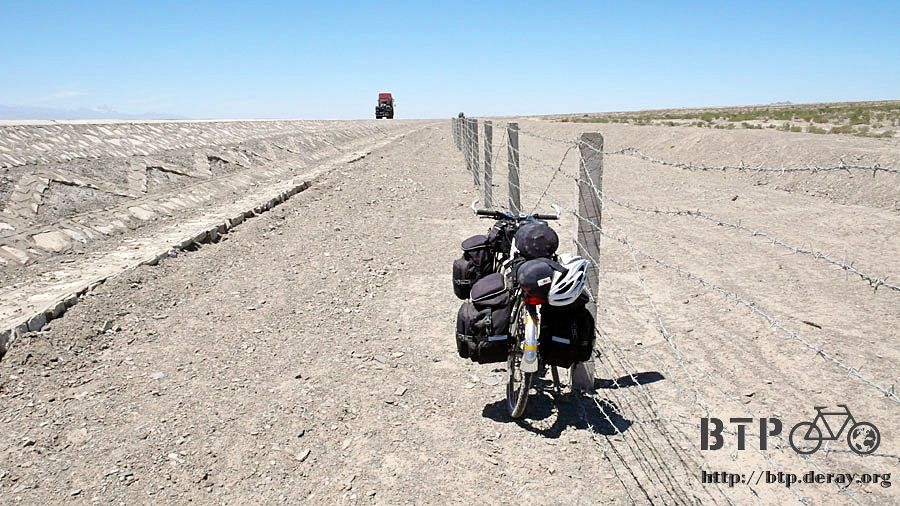
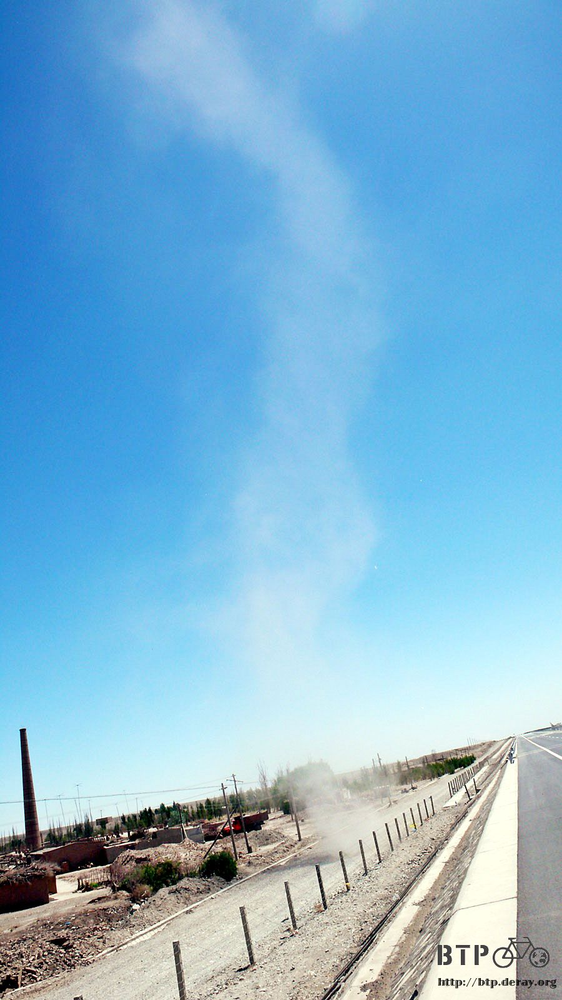
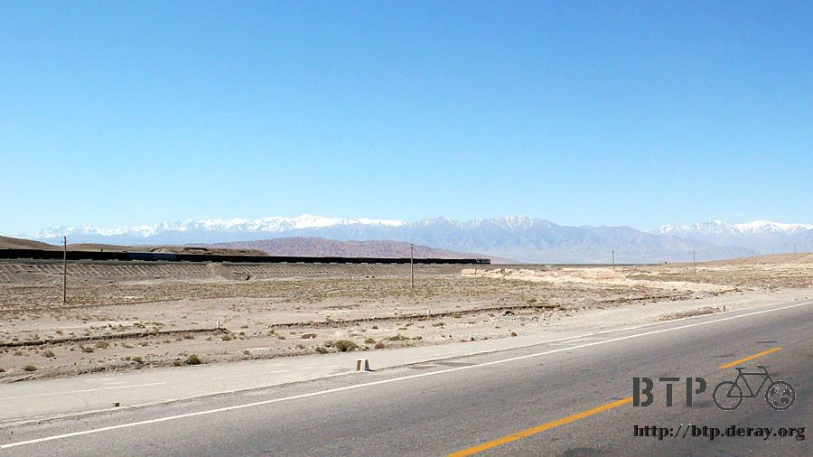
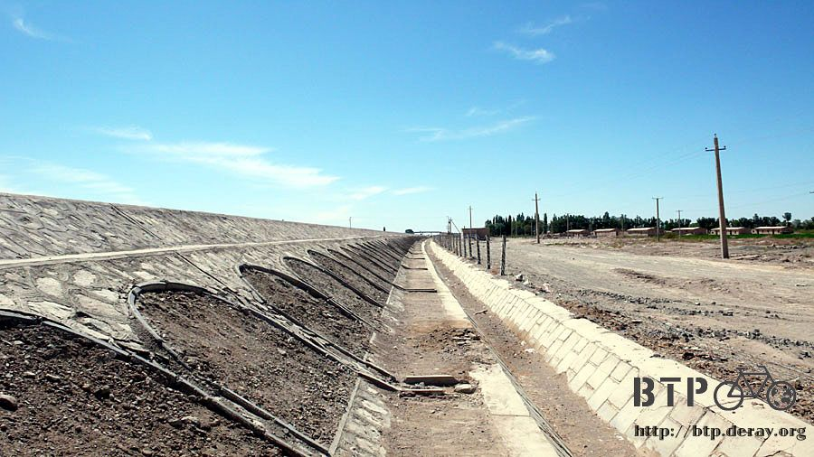
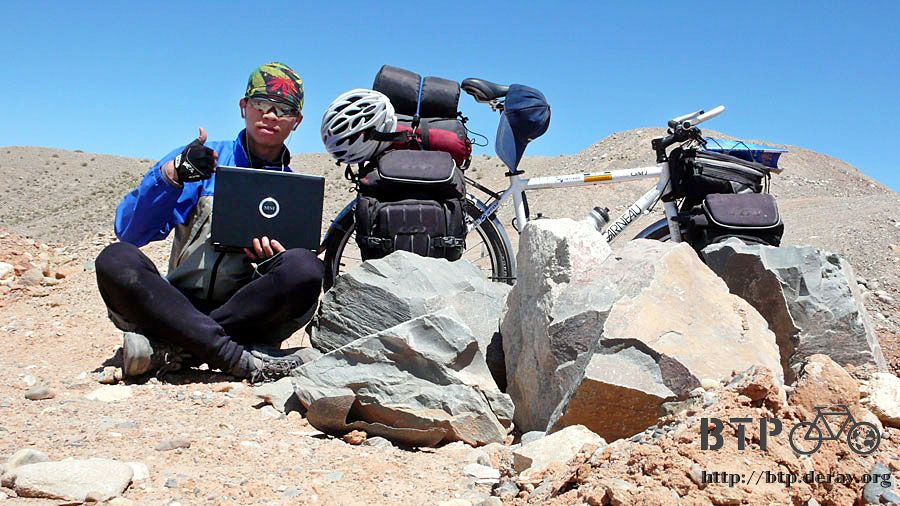
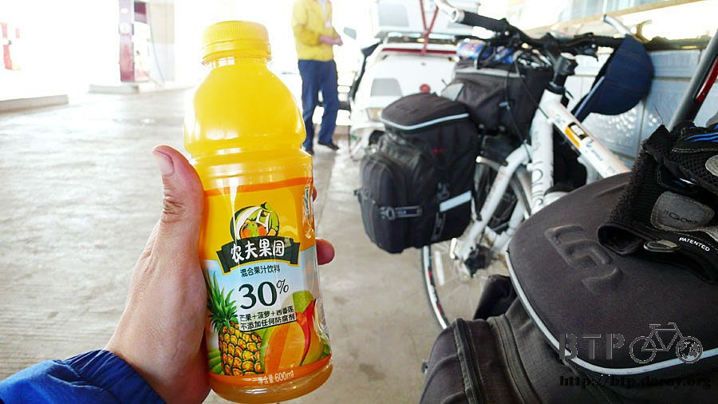
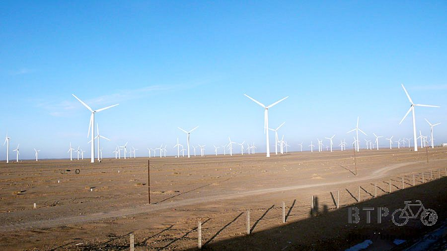
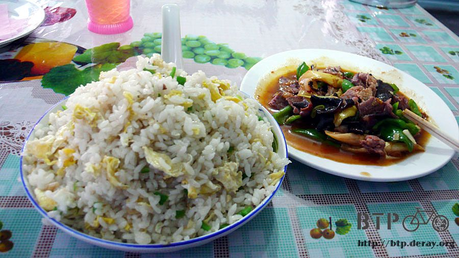

Lost National Highway
It was still a great sunny day like yesterday, the wind still blew toward me, but at least was not as harsh anymore.
Before anything else, I went to an internet café to confirm my website was up and running normally.
Then I packed my stuff and got ready to go.
I decided not to have breakfast here, so I bought some sliced soy sauce braised pork to eat while biking.
Maybe that would be a brunch for now, but I can always find something to eat on the way later.
I started on Rt 312, a national highway, and thought all I had to do was to stay on it for like 100 km.
Then YuMen, my final stop for today, would be there waiting for me.
Guess what? As soon as I left Jiayuguan (Jiayu pass),
The NATIONAL HIGHTWAY 312 all of a sudden became a couldn't-be-worst unpaved gravel road,
but I didn't see anybody was working on the road, either.
I wondered if the gravels are the result of the construction work or will be the target of the future construction work.

Can't bear the thought of the damage could have done to my Dido,
I decided to walk with Dido, and kept asking myself that how much longer I have to do this?
Amazingly, Rt 312 was gone. This was a NATIONAL highway, but it was just gone, period.
Well, there was another highway parallel to this disappeared one, but bikes were not allowed,
and it was protected by wired fence, very hard to sneak into it.
However, somewhere along the way, I found a damaged section, obviously was man-made,
so I carried my Dido passing the fence and started riding on that highway.

Compare to what I was on earlier, riding on this smooth and straight highway was so great.

As long as I was not stopped at the tollbooth, I could stay on this highway for as long as I want.
Because once you were on the highway, even the highway patrols would not kick you out nor would they stop you.
As to the tollbooth, you can either directly pass it like regular cars, or sneak around it with guilt.
The worst scenario, if you got caught by the booth collector or highway patrol,
try to play innocent while they warned you that how dangerous it could be to ride a bike on the highway.
You usually can get away safely then.
One thing strange here, the three lanes on one side were closed for 30 km without under any kind of construction.
Therefore, all cars had to share the 3 lanes on the other side.
Those cars were so fast and crazy.
So I decided to shift back to the closed-but-not-under-construction side.
Only Dido and I were on this nice part of the highway.
I can ride anyway I like. I can make a S pattern or even W pattern (zigzag).
I did not get honked by those trucks. I was happy even today was another upwind day.

Just like this, I did not have any chance to find a hotel and food until 8:30 later at night.
All I had the whole day was milk, crackers, instant noodles and peanuts.
Not really enough for an active guy like me, but at least they offered enough calories for a while.
Little embarrassing to say this:
I didn't feel too well after drinking that milk, so I had to pollute the desert with my "you-know-what".

Oh. I saw a tornado today. It started as a small swirl.
Gradually it whirled up the sands to form the typical funnel shape of a tornado.
It passed by within 5 meters away from me, so all the sands directly blew on me, like thousands of needles darting on my face.

Somehow I know people may or may not believe me when I said that
Dido was the only CAR on the highway and I could ride whatever way I want.
Here you go. A picture is worth a thousand words.

Because not much cloud to shade the sunlight, I did put on sun block almost every other hour if possible.
Luckily, the temperature was stably around 26 deg C, so it was sort of comfortable.
This track seems to continue into the desert, I wondered where it will end.

There were not many towns or stores along the highway,
all I could see was desert. The mountain top far far away was showing its snow,
which was a strong contrast with this hot and dry desert.
Once a while, some freight trains passed by, and followed by at lest 40 of freight cars.

I was having time of my life riding on this smooth highway,
and I told myself that I would get off the highway at the first exit I saw.

I finally got off at QingQuan, and I was very happy when I looked back—no Bike allowed. I knew it!!!
Well, I did go back to Rt 312 eventually. But the road condition was just as bad as what I encountered this morning.
I had to walk my Dido, and the road disappeared on me AGAIN.

Not that I did not want to follow the rules, I was so forced to go back on that smooth highway.
I felt that I was wasting my time by getting on and off like this, maybe I should just spend the whole day on this nice one.
Since this was a newly constructed highway, many barriers were not really installed completely yet.
I could still get on and off the highway through them, if I want to.
A little commercial break:
These photos were taken to express my gratitude to MSI Computer and Jeff for donating this laptop.
It allows me to store all the photos, GPS tracking information and record my journal/blog.
Without this royal laptop, my friend, I can only write my diary on paper,
and it would be impossible to update it online regularly to share them with all of you.

No town, no rest area, I was on the bike the whole day today.
Even though it was not too hot, it was still tiresome to ride a bike like this.
I finally saw some gas station, so I stopped to have some juice and catch up my breath.

Because it was upwind almost the whole day, even there was no uphill, still very difficult to keep moving forward.
The wind is blowing crazy here, I was not surprised at all to see windmills everywhere for generating electricity.
I estimated there are thousands of them. It was such a magnificent view when they all turn together by the wind.

It is approximately 130 km from Jiayuguan to Yumen.
I started a bit late today, so I expected I would arrive late, too.
Fortunately for me, the sun didn't go down until 9:00 around here, I didn't feel pressure to rush at all.
I finally got off at the exit to Yumen east at around 8:00, and I got caught by the highway patrol, not much happened though.

Rt. 312 all of a sudden showed up from nowhere, I biked back on it and about half an hour later, I arrived at Yumen city.
Being exhausted, thirty, and hungry, I checked into a cheap hotel with 15 RMB for one bed in a three-bed room.
Then I rushed into a restaurant to have my first nice meal for today.
I ordered fried rice, country-style pork saute, and a bowl of rapeseed tofu soup, delicious and nutritious, had to be nice to myself.

Back to the hotel, I poured some hot water into the sink,
cleaned up myself with the warm towel, and I felt relaxed finally.
It is no big deal not to wash the clothes for one day, but if I don't go to sleep soon,
I might break my early bird cycle, then THAT would become a big deal very soon…